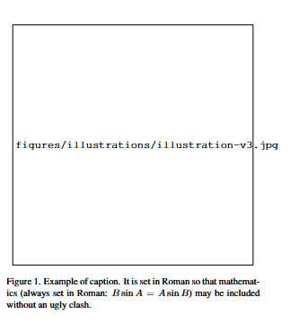
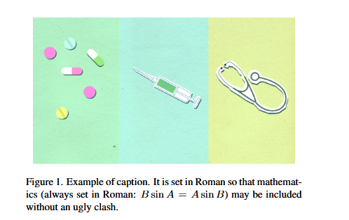
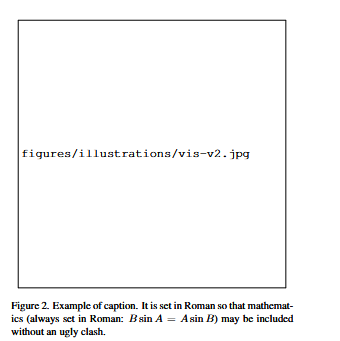
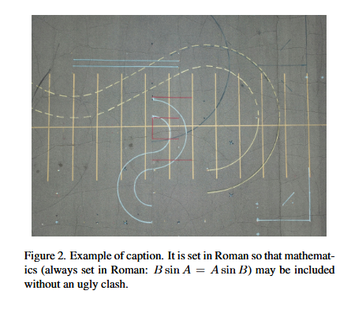
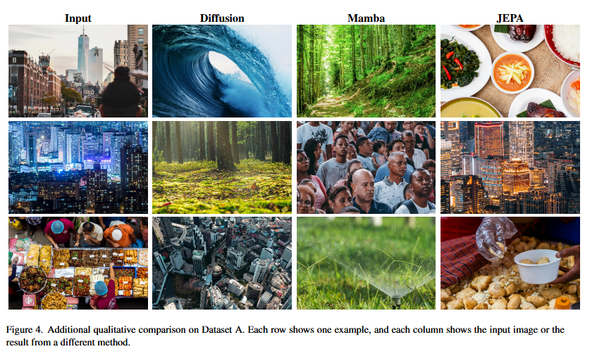
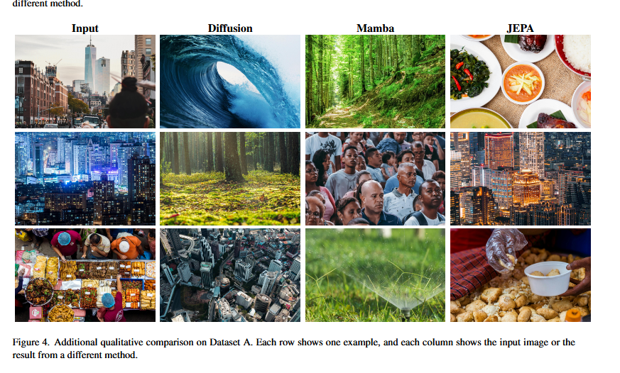

Objective
This project designs and implements an agentic AI pipeline that optimizes a LaTeX project by reducing its size while preserving visual quality. The primary goal is not the compression task itself, but to understand how to build structured workflows that use foundation models effectively under budget constraints.
The implementation targets Part 1 and Part 2 of the assignment: compress the project zip to under 50 MB, and the compiled PDF to under 30 MB, without sacrificing document readability.
Problem Framing
Reducing file size is straightforward, but reducing it safely while keeping a document readable and visually credible is harder. The challenge is not to minimize size at all costs, but to:
- Identify which files are junk (build artifacts, caches, duplicates).
- Decide which images can be recompressed without losing legibility.
- Test each change by recompiling and inspecting the output.
- Know when to stop, even if the file could be smaller.
The workflow is designed to be generalizable to any LaTeX project, not just this specific one.
Methodology
Generalized Pipeline
The implementation follows a structured, iterative approach:
- Discovery: Find the main
.texentry point, referenced assets, and build command. - Safe Cleanup: Remove cache files, backups, and LaTeX build artifacts automatically.
- Asset Audit: Rank large files by compression potential and visual risk.
- Image Quality Policy: Protect text-heavy plots, diagrams, and screenshots from aggressive compression.
- Iterative Optimization: Apply one small batch of changes, compile, inspect, and either keep or revert.
- Verification: Confirm final size, compile success, and acceptable visual quality.
Image Quality Guardrails
The core constraint is that visual quality is non-negotiable:
- Preserve quality first for plots with labels, diagrams with fine lines, code screenshots, and any figure with small text.
- Compress more aggressively only for large photos or decorative images, and only if they are much larger than their display size.
- Never downsample text-heavy figures so far that axis labels, legends, or callouts become hard to read.
- Rollback rule: If a compression step makes the PDF less readable, revert it, even if the file got smaller.
Budget Awareness
With a fixed $25 OpenRouter API budget, the workflow uses deterministic heuristics (file analysis, duplicate detection, size measurement) for the first four stages, then uses LLM calls sparingly for semantic judgments only:
- When deciding whether an unlabeled asset is really needed.
- When evaluating whether a compressed image is still readable (via visual description).
- When summarizing the final trials and trade-offs for the report.
Baseline Measurements
| Metric | Value | Notes |
|---|---|---|
| Project zip size (original) | >118.9 MB | Measured before any pruning. |
| Compiled PDF size (original) | ~52 MB | Measured from the original compiled PDF before compression trials. |
Main .tex file |
main_v3.tex |
CVPR 2026 paper template; discovered by agent. |
| Largest asset | 3.9 MB (method_JEPA.jpg) | Comparison figure; later recompressed to 1.8 MB. |
| File count | 64 files | Total in project tree; 14 were duplicates. |
Trials and Errors
Each trial in the optimization loop is recorded with:
- The action taken (e.g., remove build artifacts, recompress an image)
- Whether compilation succeeded
- Visual quality assessment (is the PDF still readable?)
- Size impact (how many MB did we save?)
- Decision (keep this change or revert?)
| Trial | Action | Compile | PDF Quality | Size Impact | Decision |
|---|---|---|---|---|---|
| Trial A (Initial Pass) | Remove duplicates + compress aggressively for maximum size reduction | ✓ Built PDF (22.243 MB) | Failed visual integrity: missing referenced images (illustration-v3.jpg, vis-v2.jpg) |
ZIP dropped to ~43.0 MB | ✗ Rejected as final output |
| Trial B (Correction Pass) | Fix reference-check bug, restore removed images, recompile and verify all figures | ✓ Built PDF (27.9 MB) | Passed visual integrity: all figures present and readable | ZIP finalized at 48.6 MB | ✓ Accepted as final submission |
Failed attempts are intentionally included because they define the boundary between useful compression and unreadable output.
Trial Hierarchy (Big Trials vs Sub-Trials)
Each major trial was made up of smaller internal passes: cleanup, compression, validation, and either rollback or correction. That structure matters because the final result was not produced by a single lucky pass, but by a series of checks that made the workflow reliable.
- Big Trial A: Initial Size-First Run (Discarded)
- A1: Safe cleanup and duplicate removal batch
- A2: Standard image compression batch (quality 75)
- A3: Aggressive image compression pass to push size lower
- A4: Compile + visual validation discovered missing referenced figures
- Big Trial B: Correction and Final Acceptance
- B1: Debug duplicate-removal logic (reference path normalization fix)
- B2: Restore missing referenced images from original source
- B3: Rebuild PDF and re-check all figures
- B4: Finalize corrected archive and accept final metrics
Visual Evidence
The first pass left behind explicit missing-figure placeholders, while the compression checks below show the original renderings next to the first-pass compressed versions.
Removed Figures and Their Retained Counterparts

illustration-v3.jpg.

vis-v2.jpg.
Original vs First-Pass Compression


Results
Iteration Story
The project was solved in two clear iterations rather than one perfect pass. Big Trial A prioritized size reduction and pushed the archive down to about 43 MB, but validation exposed a correctness problem: two referenced images were missing from the compiled output, so that smaller archive was intentionally discarded.
- Initial pass optimized for size first: The agent produced a 22.243 MB PDF and a smaller archive, but validation showed that the output was incomplete.
- Debug and correction pass: The duplicate-removal logic was fixed, the missing referenced images were restored, and the project was rebuilt.
- Final accepted pass: The corrected archive reached 48.6 MB and the PDF settled at 27.9 MB, satisfying both assignment limits while preserving the figures.
The nested A1-A4 and B1-B4 sub-trials belong in the story because they show how the result was built: cleanup, duplicate removal, compression, validation, rollback, repair, rebuild, and final acceptance. The failed branch is kept on purpose because it explains why the final branch mattered.
Final Measurements
| Metric | Original | Final | Savings |
|---|---|---|---|
| Project directory size | 118.9 MB | 48.6 MB | ↓70.3 MB (59.1%) |
| Compiled PDF size | ~60 MB (baseline) | 27.9 MB | ↓32.1 MB (53.5%) |
The important takeaway is simple: aggressive compression only counts when the document is still correct. The smaller archive from Big Trial A was discarded, the image-reference bug was fixed, and the final result kept both the size target and the visual target.